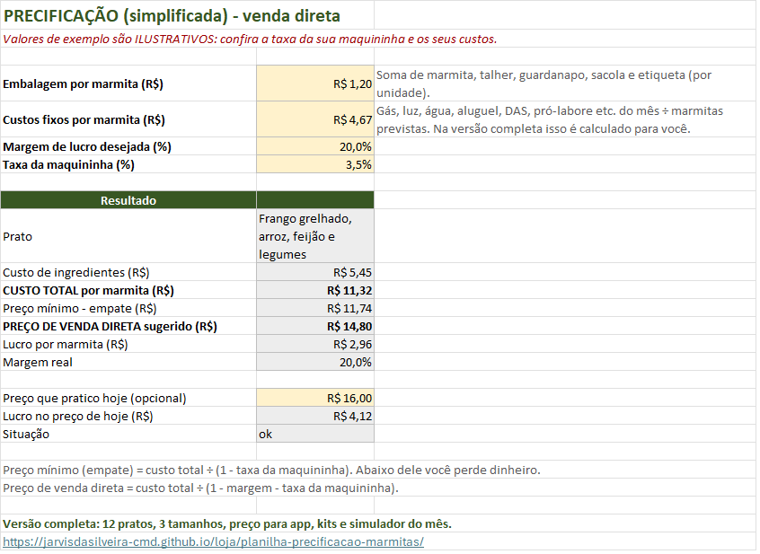

Como calcular o preço da marmita (marmitex) passo a passo
Muita gente define o preço da marmita olhando a concorrência ou "no olho". O problema é que o vizinho tem outros custos, e um preço que parece bom pode estar dando prejuízo sem você perceber. A conta certa começa pelo seu custo.
1. Descubra o custo por grama de cada ingrediente
Você compra arroz em pacote de 5 kg, mas usa 90 g por marmita. Então divida o preço pela quantidade em gramas:
R$ 27,90 ÷ 5.000 g = R$ 0,0056 por grama
Alguns ingredientes perdem peso na limpeza: casca, osso, aparas. Esse é o aproveitamento. Se de 1 kg de frango com osso sobram 700 g aproveitáveis, o aproveitamento é 70%, e o custo real por grama aproveitável é o custo por grama dividido por 0,70. Quem ignora isso subestima o custo das proteínas, que costumam ser o item mais caro do prato. Explicamos isso em detalhe no texto sobre ficha técnica de marmitex.
2. Monte a ficha técnica de cada prato
A ficha técnica lista cada ingrediente e a quantidade usada em uma marmita. Pese pelo menos uma vez, não estime. Multiplique a quantidade pelo custo por grama e some tudo.
| Ingrediente | Quantidade | R$ por g/ml | Custo |
|---|---|---|---|
| Filé de peito de frango (aproveitamento 95%) | 150 g | 0,0241 | R$ 3,62 |
| Arroz branco | 90 g | 0,0056 | R$ 0,50 |
| Feijão carioca | 50 g | 0,0085 | R$ 0,42 |
| Cenoura e abobrinha | 80 g | — | R$ 0,57 |
| Óleo, sal, alho e cebola | 32 g/ml | — | R$ 0,35 |
| Ingredientes por marmita | ≈ R$ 5,45 |
A soma das linhas arredondadas dá R$ 5,46; a planilha usa os centavos completos e chega a R$ 5,45.
Se você vende tamanhos diferentes, use um multiplicador sobre a porção M. Por exemplo: P = 0,75 e G = 1,3.
3. Some embalagem e custos fixos
Ingrediente não é o único custo. Entram também:
- Embalagem por marmita: pote com tampa, talher, guardanapo, sacola e etiqueta. No exemplo, R$ 1,20.
- Custos fixos do mês: gás, a parte da luz e da água que vai para a cozinha, aluguel ou parte da casa, internet, o seu DAS (se for MEI, confira o valor no seu boleto) e o seu pró-labore, que é o salário que você quer tirar.
Divida o total fixo do mês pelas marmitas que você realisticamente espera vender. No exemplo: R$ 2.800 ÷ 600 marmitas = R$ 4,67 por marmita. Se você superestimar as vendas, o custo fixo por marmita fica artificialmente baixo, e o preço também.
Custo total = ingredientes + embalagem + rateio fixo = 5,45 + 1,20 + 4,67 = R$ 11,32.
4. Calcule o preço mínimo e o preço de venda
Taxas que incidem sobre o preço, como a da maquininha, não podem ser simplesmente somadas ao custo: elas são um percentual do preço final. Por isso a conta é feita por divisão.
- Preço mínimo (empate) = custo total ÷ (1 − taxa da maquininha). Com taxa ilustrativa de 3,5%: 11,32 ÷ 0,965 ≈ R$ 11,73. Abaixo disso, cada venda dá prejuízo.
- Preço de venda direta = custo total ÷ (1 − margem − taxa). Com margem de 20%: 11,32 ÷ 0,765 ≈ R$ 14,80, que pode ser arredondado para R$ 15,00.
Por que não é só "custo + 20%"?
Se você fizer 11,32 × 1,20 = R$ 13,58, parece que garantiu 20%, mas não garantiu. Teste: vendendo a R$ 13,58, a maquininha leva 3,5% (R$ 0,48) e sobram R$ 1,78 de lucro, uma margem de cerca de 13% sobre o preço, não 20%. São dois motivos: 20% sobre o custo não é o mesmo que 20% sobre o preço, e a taxa sai do preço. Com a conta por divisão, a R$ 15,00 a taxa leva R$ 0,53 e sobram cerca de R$ 3,16 por marmita, cerca de 21% do preço.
5. Ajuste para o app e confira o mês
No app de delivery, a comissão costuma ser bem maior que a taxa da maquininha, e às vezes há custo de entrega por sua conta. Por isso o preço do app deve ser calculado à parte:
Preço no app = (custo total + entrega) ÷ (1 − margem − comissão)
A conta completa, com exemplo, está em preço de marmita no iFood e outros apps. A comissão real é a do seu contrato: confira antes de calcular.
Por fim, olhe o mês inteiro. O ponto de equilíbrio é quantas marmitas você precisa vender para pagar todos os custos fixos, incluindo o seu pró-labore. Ele é calculado dividindo os custos fixos pela margem de contribuição média de cada marmita (preço menos custos variáveis: ingredientes, embalagem, taxas e entrega). Se você vende menos que isso, o problema não é só o preço: é volume ou custo fixo alto.
Resumo
- Custo por grama, com aproveitamento.
- Ficha técnica pesada de cada prato.
- Embalagem e custos fixos rateados, com o seu pró-labore incluído.
- Preço mínimo e preço de venda calculados por divisão, não por soma.
- Preço próprio para app e conferência do ponto de equilíbrio do mês.
Vende marmitas congeladas em kit? Veja como calcular o preço do kit semanal de marmitas congeladas, incluindo pote de freezer, gás e o desconto do kit.
Faça essa conta na planilha
A versão grátis da Planilha de Precificação de Marmitas faz os passos 1 a 4 para 1 prato: você digita os ingredientes como compra e ela calcula custo total, preço mínimo e preço de venda direta.

A versão completa calcula 12 pratos em 3 tamanhos, preço para app, kits e simulador do mês.